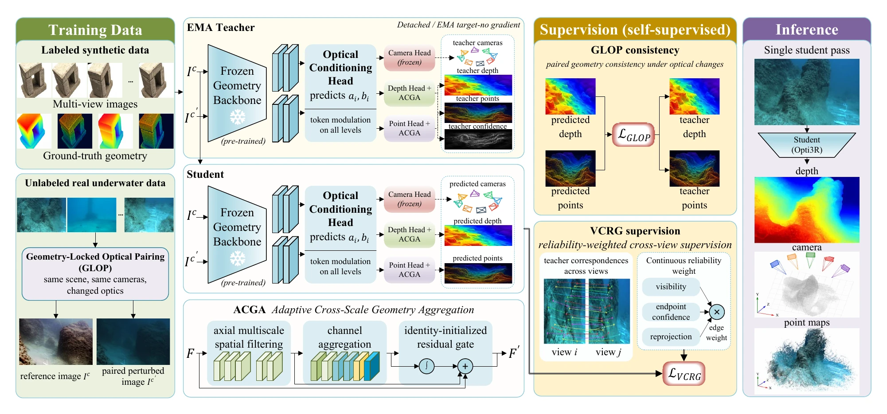
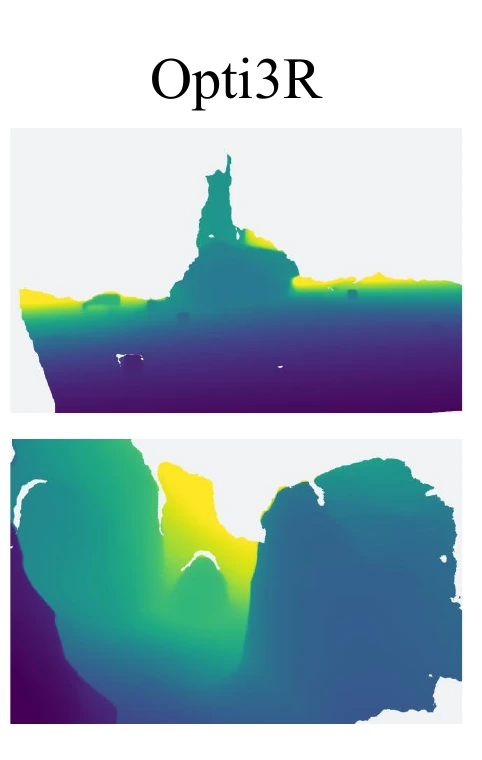
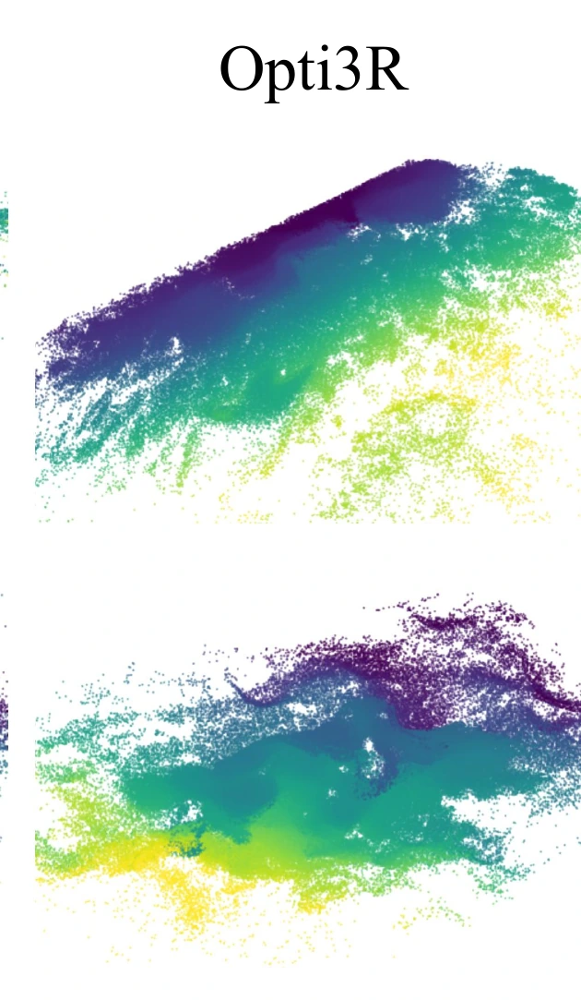
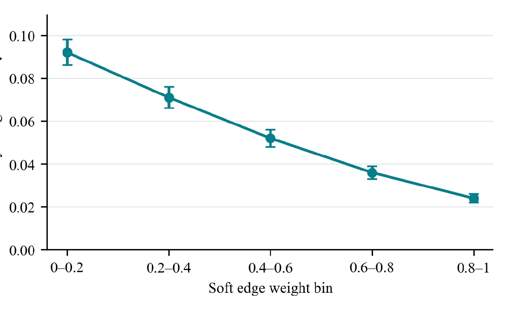

Opti3R: Geometry-Locked Optical Pairing and Reliability-Weighted Cross-View Supervision for Underwater 3D Reconstruction
Under review
Abstract
Attenuation and backscatter change underwater image appearance even when the scene geometry stays fixed. These changes can lead feed-forward models to predict inconsistent depth and shape. To reduce this effect, we propose Opti3R, which trains on Geometry-Locked Optical Pairing (GLOP): paired reference and optically perturbed images with consistent geometry targets. We further use teacher correspondences to supervise cross-view consistency with continuous visibility-confidence-reprojection (VCR) edge weighting, referred to as VCR Graph supervision (VCRG). Our Axial-Channel Geometry Adapter (ACGA) adds identity-initialized multiscale residual blocks to the dense depth and point heads. Together, these components support geometry-locked optical pairing and continuously weighted cross-view supervision for underwater reconstruction.
Methodology

Interactive 3D Reconstruction
A real Water3D reconstruction produced by the project. Drag to rotate the point cloud and scroll to zoom.
Qualitative Results


Reliability-Weighted Supervision

Run Opti3R
Provide a compatible checkpoint and a directory containing at least two RGB images. The inference script writes depth, confidence, world points, and metadata.
python test.py \
--checkpoint /path/to/opti3r.pt \
--input /path/to/images \
--output outputs/example \
--device cuda